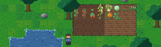
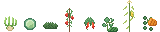

A farming game about a Slavonian village that is emptying out, and the forest that is not.

You inherit your grandmother's house in a village on the plain, three people from empty. By day you work the fields, fix the house and bring the village back one household at a time. Past the fields is the old oak forest, and in it the creatures from the stories she used to tell you. She was not joking.
Real crops, real festivals, real stories. It ends after two years, when the village fair comes round and you find out who came home.
Built alone, in the evenings, in Godot. No release date. Right now: drawing the village street and the river.
Devlog
- Why a farming game about a village that is emptying out
Where the idea comes from, what the game is, and where it stands.